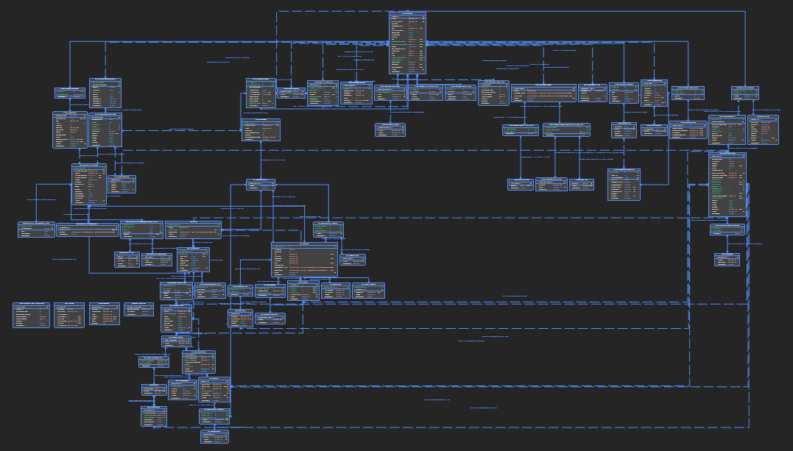

As most readers would probably guess, this is about messy code and technical debt. But the primary motivation isn’t to mention that software projects have technical debt, but rather to explain why it pops up in more ways than one would normally would expect.
I’m sure these things have came up for yout team:
- Why do we need to touch functionality in the Catalog microservice? That’s been around for years and nothing chaned in that area.
- Why do you guys need to refactor Checkout component? Why wasn’t written properly from the beginning?
Intuition would say that if you haven’t touched a portion of the project code, that part would not incur technical debt, just as for example if you don’t go in a room in your apartment, that room would not get messy. If you don’t do anything on drive D, it doesn’t get defragmented, and so on.
But this isn’t true about code.
A Not So Technical In Entropy
Every one loves a nice late. And nice late art, fleeting as it is. We look at it, we enjoy it for a while, then we watch it disappear as we take our first sip of coffee.
In fact we expect that it will eventually disappear even if you don’t touch the cup, because it’s the natural order of things.
- Your apartment gets messier, not cleaner, without you putting in the effort.
- Your hard drive gets cluttered and defragmented.
- Objects like your phone get dings on them, they don’t get shiner and smoother.
- Flowers whither away and die.
The second law of thermodynamics states that the total entropy of an isolated system always increases over time, where entropy is a measure of disorder or randomness in a system. The second law of thermodynamics isn’t really a law, like the 2nd law of thermodynamics. It’s probabilistic in nature.
Yes, it happens to code, as we’ll see.*
The Red Queen
“Now, here, you see, it takes all the running you can do, to keep in the same place.” — Lewis Carroll
In the context of the story, Alice finds herself in a world where the rules of logic and physics are constantly shifting, and she struggles to keep up. The Red Queen, a representation of the ever-changing nature of the world, explains to Alice that in this topsy-turvy place, even staying still requires constant effort. The broader significance of the quote lies in its applicability to the human experience. In today’s fast-paced and ever-changing world, we often find ourselves running just to stay in the same place. The industries we work in, the technologies we use, and the social norms we navigate are constantly evolving, leaving us with the constant challenge of adapting and re-skilling to keep up.
This concept gets brought up in evolutionary biology, for example. But it’s also true for code, because technology evolves. Browsers evolve. Frameworks evolve. Libraries are no longer mantained and so on. Many times, the issue is that new versions of libraries might not be backwards compatible like React Router 5. Even if you don’t need the new functionality, it is still a good idea to keep the node version your are supporting and so forth, so you will need to udpate your dependencies.
Code Patterns (And Fragmentation)
There’s a lot of debating around the merits of various architectures, like MVC vs. minimal APIs, Clean Architecture vs. just regular n-tier, etc., but I think one aspect that gets brought up less is the fact that they are about enforcing consistent patterns in the application. As a developer, it is important to be able to understand and find code easily. Ideally, you want to be able to be able to understand the code by reading it, without having to debug. True, the fact that these patterns enforce high cohesion and low coupling also helps.
Ultimately, it’s about mental models and compartimentalization. Let’s use a simple analogy of cabinets and drawers.
You want to be able to find an object easily, so you are organizing your drawers based on a set of rules. Over time, with use, especially if you’re not being diligent, things will get messier. But there’s another aspect: the number of objects you have increases, you might want to throw some things, so patterns become outdated.
The company you work for is a successful bookstore a,d it’s 1995. And because it’s so successful, the stakeholders want to expand the product to be able to sell more products, not just books. The developers will have to make changes in the code.
This might look familiar.
Over time, your domain model expands and changes. In the case of amazon, sau they want to go from selling Books to any product.
Here’s an example of the AdventureWorks database from 2016.
export class Book
{
public Guid Id { get; set; }
public string Title { get; set; }
public decimal Price { get; set; }
}If you want to support regional pricing, for example, this needs to be changed. If you want to support multiple pricing regions, you might want to
export class Pricing
{
public int Id { get; set; }
public int BookId { get; set; }
public int RegionId { get; set; }
}A key takeaway is as the domain model evolves, and patterns emerge, you also need to go in and modify existing code.
Let’s say you now want to support multiple types of products.
public abstract class Product
{
public Guid Id { get; set; }
public string Name { get; set; }
public string Description { get; set; }
}Of course, this widely simplifies things.
This isn’t even a particularly complicated database.
Over time, keeping code clean requires refactoring, extracting abstract base classes, renaming properties and so forth.
In Domain-Driven Design (DDD), ubiquitous language is a central concept that refers to a shared vocabulary used by everyone involved in a project, including developers, domain experts, and other stakeholders. This common language ensures that everyone understands the domain concepts in the same way, eliminating ambiguity and promoting clear communication. Ubiquitous language is a powerful tool that can help to improve communication, understanding, and model fidelity in DDD projects. By investing in the development and use of a shared language, teams can build more effective and adaptable software solutions.
Modules / Microservices
Since changing existing code implies a higher cognitive load than adding new code, many times developers will just add new properties, new modules, or entire new microservices, where they could have probably justchanged existing code. This can happen for backwards compatibility purposes.
Adding , a lot of the time is easier than modyfing existing code.
With microservices, people might not even be aware of existing functionality. And it becomes apparent over time that things are duplicated, and that some kind of restructuring / reorganization is needed.
Changing the code isn’t that hard. Database migrations are a different story altogether, because you are dealing with people’s data.